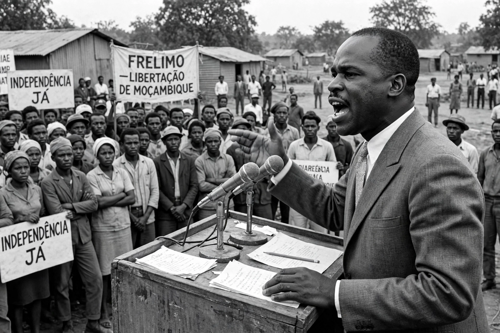

Eduardo Mondlane
From Wikipedia, the free encyclopedia

Eduardo Chivambo Mondlane (20 June 1920 – 3 February 1969) was a Mozambican anthropologist and nationalist leader who founded FRELIMO (the Front for the Liberation of Mozambique) in 1962 and led it until his assassination by a parcel bomb in 1969. He is regarded as the father of Mozambican independence, achieved six years after his death, and the university in Maputo bears his name.
Early life and education
Mondlane was born in Manjacase, Gaza Province, the son of a Tsonga chief. Educated by Swiss missionaries and in South Africa (from which he was expelled in 1949 as apartheid hardened), he studied in Portugal and then the United States — Oberlin College and a PhD in anthropology from Northwestern University (1955). He worked for the United Nations trusteeship department and taught at Syracuse University, experiences that built the international network he later mobilised for liberation.
Founding FRELIMO
Returning to Africa in 1961, Mondlane united three exile movements into FRELIMO at Dar es Salaam in June 1962 and was elected its first president. Under him FRELIMO launched the armed struggle against Portuguese colonial rule on 25 September 1964, combining guerrilla warfare in the north with schools, clinics and production in liberated zones, and drawing support from Tanzania, the socialist bloc and Western solidarity movements. His book The Struggle for Mozambique was published posthumously in 1969.
Assassination and legacy
On 3 February 1969 a bomb concealed in a book parcel exploded at FRELIMO's Dar es Salaam office, killing Mondlane. Responsibility remains disputed — Portuguese secret police (PIDE) are the prime suspects, possibly with internal rivals' complicity. After a power struggle, Samora Machel emerged as leader and led FRELIMO to independence in 1975. 3 February is Mozambican Heroes' Day.